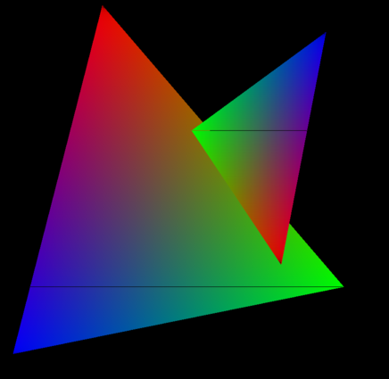

Z-Buffer¶
How do we determine which triangle is in front when multiple objects overlap? This is the visibility problem that every 3D renderer must solve.

The Depth Problem¶
Consider two triangles in 3D space that overlap when viewed from the camera:
- Triangle A is closer to the camera (smaller z)
- Triangle B is farther away (larger z)
Question: Which triangle should appear in front on the screen?
Without a Z-Buffer¶
If we simply draw triangles in the order they appear in our data:
- Draw Triangle B first → fills pixels
- Draw Triangle A second → overwrites those pixels ✅
This works! But what if the order is reversed?
- Draw Triangle A first → fills pixels
- Draw Triangle B second → overwrites Triangle A ❌ WRONG!
Problem: Rendering order determines visibility, not actual depth. We'd need to sort all triangles by depth before drawing—expensive and error-prone.
With a Z-Buffer¶
The z-buffer solves this automatically:
- For each pixel, store its depth (distance from camera)
- Before drawing a pixel, check: "Is this fragment closer than what's already there?"
- If yes: draw and update depth
- If no: discard (don't draw)
Result: Triangles can be drawn in any order, and the closest one always wins!
What is a Z-Buffer?¶
The z-buffer is a 2D array that stores a depth value for every pixel on the screen.

Data Structure¶
In this rasterizer, the z-buffer is implemented as a 1D Lua table:
For a screen resolution of 820×580 pixels, the buffer contains 475,600 depth values.
Array Indexing¶
Pixels are stored in row-major order (row by row, left to right):
Why the +1? Lua uses 1-based indexing (arrays start at index 1, not 0).
Example:
- Pixel at (5, 10) in a 820-pixel-wide buffer:
- idx = 10 × 820 + 5 + 1 = 8206
Initialization¶
Every pixel starts with depth = infinity (as far away as possible):
Why infinity? Any real depth value will be closer, so the first triangle drawn at a pixel will always pass the depth test.
The Depth Test¶
The core algorithm is simple: only draw if closer.
Algorithm¶
For each pixel \((x, y)\) we want to draw:
- Compute depth
zat that pixel (using barycentric interpolation) - Get stored depth:
depth_stored = zbuf[idx] - Compare:
- If
z < depth_stored: This fragment is closer- Update z-buffer:
zbuf[idx] = z - Draw pixel with triangle's color
- Update z-buffer:
- Otherwise: This fragment is farther → discard (don't draw)
The Depth Test Condition¶
Interpretation: - Smaller z = closer to camera - Larger z = farther from camera
Test meaning: "Is the new fragment closer than what's currently stored?"
Code Example¶
local idx = y * RENDER_W + x + 1
if z < zbuf[idx] then
zbuf[idx] = z -- Update depth
imgData:setPixel(x, y, r, g, b, 1) -- Draw pixel
end
As shown in the diagram above, when Triangle 1 is drawn, the z-buffer fills with its depth values. When Triangle 2 is drawn later, only pixels where Triangle 2 is closer get updated—the z-buffer prevents Triangle 2 from overwriting closer pixels from Triangle 1.
Perspective-Correct Depth Interpolation¶
Here's a crucial detail: we cannot simply interpolate \(z\) linearly in screen space.
The Problem¶
After perspective projection, screen space is non-linear—objects farther away are compressed more than nearby objects.
If we linearly interpolate \(z\) using barycentric coordinates directly:
This gives incorrect depth values because barycentric coordinates are linear in screen space, but depth varies non-linearly due to perspective.
The Solution: Interpolate 1/z¶
The key mathematical insight: reciprocal depth (\(1/z\)) varies linearly in screen space!
Algorithm: 1. Precompute reciprocals for each vertex: $\(invz_i = \frac{1}{z_i}\)$
-
Linearly interpolate \(1/z\) using barycentric coordinates: $\(invz = w_1 \cdot invz_1 + w_2 \cdot invz_2 + w_3 \cdot invz_3\)$
-
Recover actual depth: $\(z = \frac{1}{invz}\)$
Why This Works¶
Barycentric coordinates \((w_1, w_2, w_3)\) are linear in screen space—they change uniformly across the triangle after projection.
When we interpolate \(1/z\) (instead of \(z\)) using these linear weights, we get perspective-correct results because:
- The perspective projection maps world-space depth \(z\) non-linearly to screen space
- But \(1/z\) transforms linearly through projection
- Interpolating linearly in screen space and taking the reciprocal recovers the correct world-space depth
This is a fundamental principle of perspective-correct rasterization used in all 3D graphics.
Barycentric Coordinates and Depth¶
Recall from triangle rasterization that barycentric coordinates \((w_1, w_2, w_3)\) express a point \(P\) as a weighted blend of the three triangle vertices:
where \(w_1 + w_2 + w_3 = 1\).
Using Barycentric Weights for Depth¶
We use these same weights to interpolate depth:
-- Precompute reciprocal depths (once per triangle)
local invz1 = 1.0 / T.z1
local invz2 = 1.0 / T.z2
local invz3 = 1.0 / T.z3
-- For each pixel inside the triangle:
local w1 = edge(x2,y2, x3,y3, px,py) * invA
local w2 = edge(x3,y3, x1,y1, px,py) * invA
local w3 = 1.0 - w1 - w2
-- Interpolate 1/z
local invz = w1*invz1 + w2*invz2 + w3*invz3
-- Recover z
local z = 1.0 / invz
Formula Summary¶
Key property: Each barycentric weight represents how much influence the corresponding vertex has on the pixel. Vertices closer to the pixel have larger weights.
Complete Z-Buffer Algorithm¶
Putting it all together, here's the full rasterization loop with z-buffering:
local function rasterize_with_zbuffer(tris, winW, winH)
-- Step 1: Clear z-buffer to infinity
for i = 1, RENDER_W * RENDER_H do
zbuf[i] = math.huge
end
imgData:mapPixel(function() return 0, 0, 0, 1 end)
-- Step 2: Rasterize each triangle
for i = 1, #tris do
local T = tris[i]
local r, g, b = T.color[1], T.color[2], T.color[3]
-- Transform to render coordinates
local sx, sy = RENDER_W / winW, RENDER_H / winH
local x1, y1 = T.p1[1]*sx, T.p1[2]*sy
local x2, y2 = T.p2[1]*sx, T.p2[2]*sy
local x3, y3 = T.p3[1]*sx, T.p3[2]*sy
-- Compute bounding box
local minx = math.max(0, math.floor(math.min(x1,x2,x3)))
local maxx = math.min(RENDER_W-1, math.floor(math.max(x1,x2,x3)))
local miny = math.max(0, math.floor(math.min(y1,y2,y3)))
local maxy = math.min(RENDER_H-1, math.floor(math.max(y1,y2,y3)))
-- Triangle area and reciprocal depths
local A = edge(x1,y1, x2,y2, x3,y3)
if A ~= 0 then
local invA = 1.0 / A
local invz1 = 1.0 / T.z1
local invz2 = 1.0 / T.z2
local invz3 = 1.0 / T.z3
-- Step 3: Rasterize pixels in bounding box
for y = miny, maxy do
for x = minx, maxx do
local px, py = x + 0.5, y + 0.5 -- Pixel center
-- Compute barycentric coordinates
local w1 = edge(x2,y2, x3,y3, px,py) * invA
local w2 = edge(x3,y3, x1,y1, px,py) * invA
local w3 = 1.0 - w1 - w2
-- Inside-triangle test
if w1>=0 and w2>=0 and w3>=0 then
-- Perspective-correct depth interpolation
local invz = w1*invz1 + w2*invz2 + w3*invz3
local z = 1.0 / invz
-- Z-test
local idx = y*RENDER_W + x + 1
if z < zbuf[idx] then
zbuf[idx] = z
imgData:setPixel(x, y, r, g, b, 1)
end
end
end
end
end
end
img:replacePixels(imgData)
end
The Complete Pipeline¶
How does depth flow through the rendering pipeline?
From 3D Vertex to Final Pixel¶
- World coordinates → Model transform
-
Object vertices in world space
-
View transform (camera space)
- Transform relative to camera
-
z value obtained here (distance from camera)
-
Projection to screen space
- Apply perspective projection
- Preserve z for later use
-
Vertices become 2D screen positions
-
Triangle assembly
- Store:
(p1, p2, p3, z1, z2, z3, color) -
Screen positions + original depths
-
Rasterization
-
For each pixel in triangle:
- Interpolate \(1/z\) using barycentric weights
- Recover \(z = 1/invz\)
- Z-test:
if z < zbuf[idx]then draw
-
Display
- Only pixels that passed z-test are visible
Key insight: The depth values come from camera space (step 2), but are used during rasterization (step 5) after projection to screen space.
Edge Cases and Important Details¶
Why Initialize to math.huge?¶
Using infinity ensures that any real depth value will pass the initial depth test. This way, the first triangle to render at a pixel will always draw.
Why Test z < zbuf[idx] Instead of >?¶
In this coordinate system: - Smaller z = closer to camera (in front) - Larger z = farther from camera (behind)
The test z < zbuf[idx] means: "Is this fragment closer than what's currently stored?"
Near Plane Clipping¶
Before triangles reach rasterization, vertices behind or too close to the camera are rejected:
Vertices with \(z \leq 0.001\) are discarded to prevent division by zero in projection.
Z-Fighting¶
What happens when two triangles have the exact same depth at a pixel?
Answer: The first triangle rendered wins (first-come, first-served).
This can cause z-fighting—flickering artifacts when two surfaces occupy the same depth. Solutions include: - Increase z-buffer precision - Offset one surface slightly - Use depth bias
Example Walkthrough¶
Let's compute depth for a specific pixel step by step.
Given¶
- Triangle vertices with depths: \(z_1 = 2.0\), \(z_2 = 3.0\), \(z_3 = 4.0\)
- Pixel with barycentric coordinates: \(w_1 = 0.5\), \(w_2 = 0.3\), \(w_3 = 0.2\)
- Z-buffer at this pixel currently stores: \(zbuf[idx] = 5.0\)
Step 1: Precompute Reciprocal Depths¶
Step 2: Interpolate 1/z¶
Step 3: Recover Depth¶
Step 4: Z-Test¶
Compare: \(z = 2.5\) vs \(zbuf[idx] = 5.0\)
Test: \(2.5 < 5.0\) → ✅ PASS
Action:
- Update z-buffer: zbuf[idx] = 2.5
- Draw pixel with triangle color
Result: This fragment is closer than what was stored, so it becomes visible!
Summary¶
The z-buffer solves the visibility problem in 3D rendering:
Key Insights:
- Z-buffer = 2D array storing depth for each pixel
- Initialization: All depths start at infinity (
math.huge) - Depth test:
z < zbuf[idx](closer fragments overwrite farther ones) - Perspective-correct interpolation: Use \(1/z\) with barycentric weights
- No sorting needed: Triangles can be drawn in any order
What We Achieved:
- ✅ Correct occlusion — objects in front hide objects behind
- ✅ Any rendering order — no need to sort triangles by depth
- ✅ Automatic visibility — z-buffer handles overlap without manual intervention
The Formula:
With the z-buffer, our 3D rasterizer can now correctly render complex scenes with overlapping geometry—just like modern GPUs do!